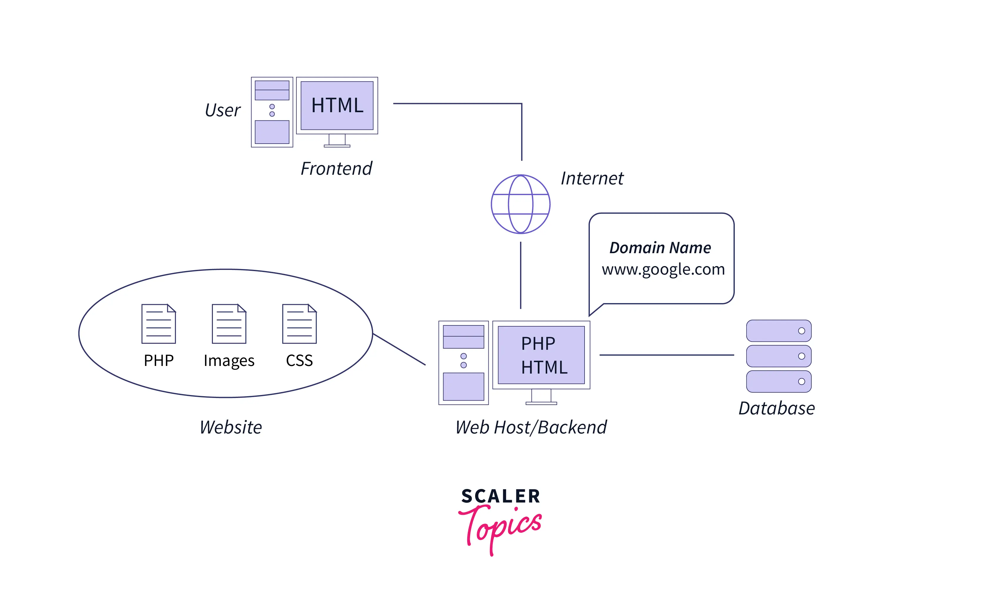

Featured Articles
How to Write Clean Code – Tips and Best Practices
 Improve your coding skills with these expert tips.So in this article
we'll talk about what the term "clean code" means, why it's important,
how can we assess whether a codebase is clean or not. You'll also learn
some best practices and conventions you can follow to make your code
cleaner.
Read the full article
Improve your coding skills with these expert tips.So in this article
we'll talk about what the term "clean code" means, why it's important,
how can we assess whether a codebase is clean or not. You'll also learn
some best practices and conventions you can follow to make your code
cleaner.
Read the full article
The Future of Artificial Intelligence
The Future Of AI: 5 Things To Expect In The Next 10 Years

There has been no better time to be in the world of artificial
intelligence than now. AI has achieved an inflection point and is poised
to transform every industry. Much has already been written about
specific applications of AI.
Read the full article
Backend Developer Roadmap: The Ultimate Guide 2023
This article will offer a backend developer roadmap so you can learn
clearly about the procedure and requirements of backend web development.

Interested in becoming a backend developer? Being a newcomer to the web
development field and not knowing anything is something we have all gone
through in our lives. However, if you are determined to become a backend
web developer, congratulations, you have already cleared one stage. The
next stage is to learn about backend web development. And we will help
you with this. In this article, we will offer a step-by-step guide to
explain programming languages, tools, and technologies utilized for
backend development.
Read the full article
Top 5 Tech Stacks for Web App Development in 2023
There are several factors you must consider before choosing the right
tech stack for your product.s

A tech stack is the combination of technologies and tools used to
develop and run software applications or a website. It typically
includes a mix of programming languages, frameworks, databases, and
other tools that work together to deliver the desired functionality and
performance. All developers and companies must have the proper knowledge
about each tech stack before beginning their journey in building a web
app. Knowing this will have significant impact on the performance,
scalability, and maintainability of the application.
Read the full article
Top 7 Data Science Certifications That You Can Consider
Planning to earn that token of recognition which can let you cover extra
miles for better credibility and performance presented by your
portfolio!!

Data Science Certifications can be your online or offline Data Science
Skills assessment document which ensures that if a potential employer
hires you to incorporate many data-driven insights in any of the
day-to-day business processes, then you can reciprocate such justified
incorporation through your industry-ready job prospects prepared by the
curriculum of any of the Data Science certifications.
Read the full article